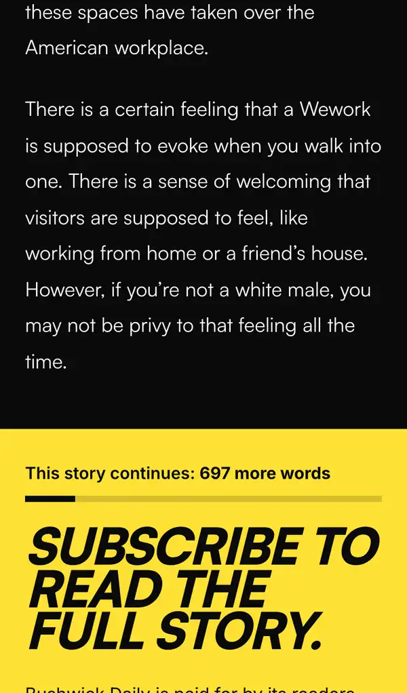
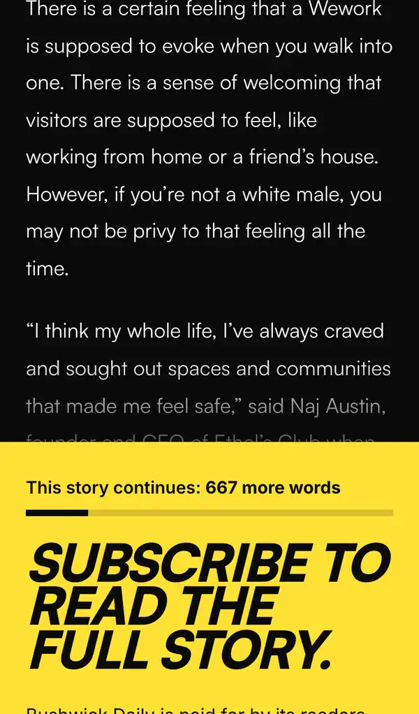
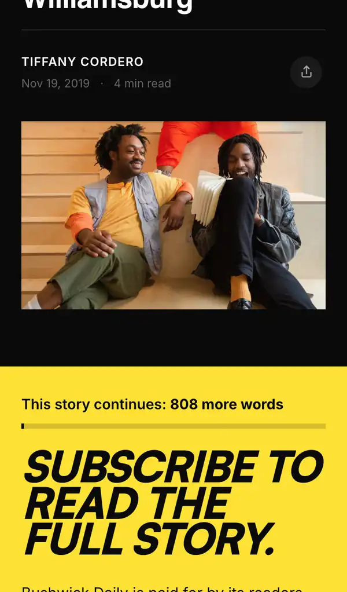
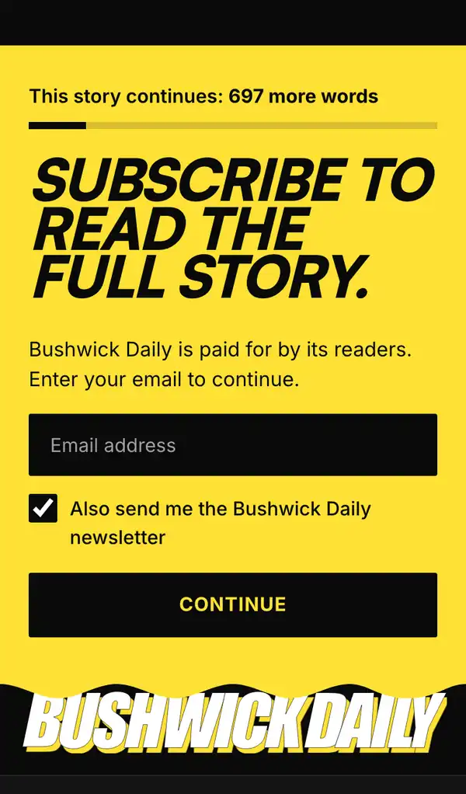
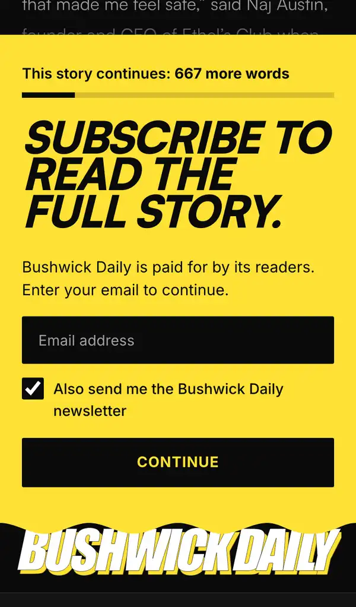
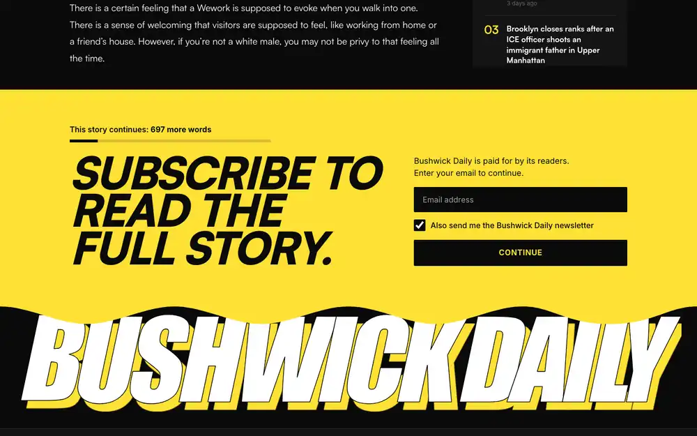
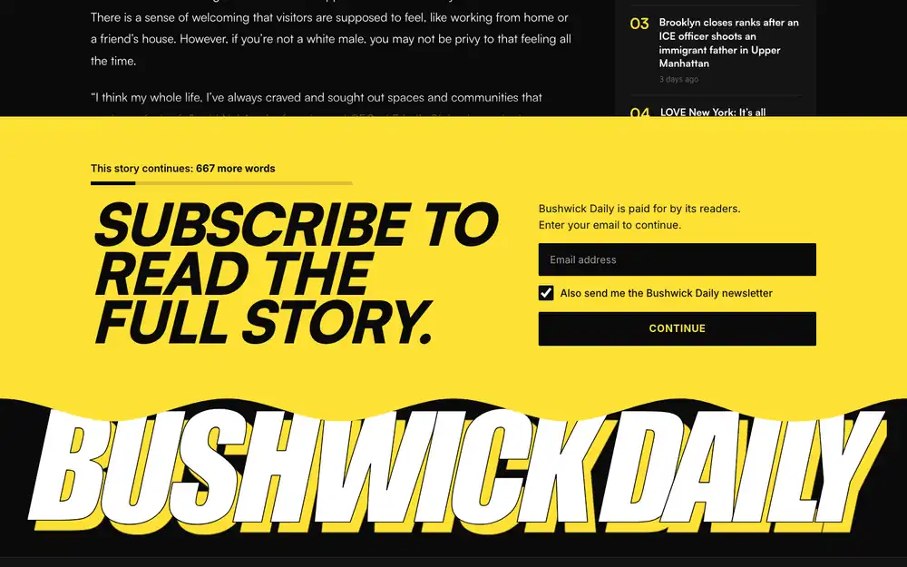
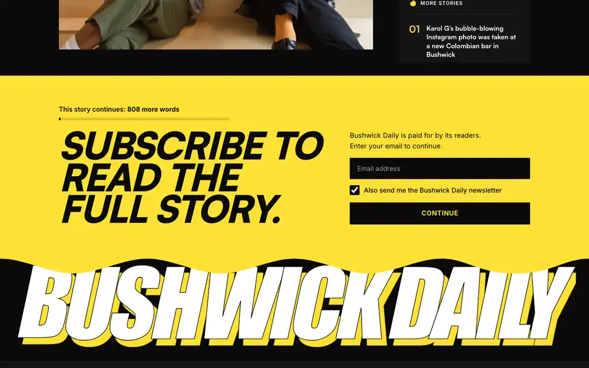

Three gate treatments on one story: paragraphs, teaser, none
Design mockups, 2026-10-13. Nothing here is live. The problem they answer: a clean cut after a short opening makes a story look finished, and an inverted-pyramid lede is complete by design. Each treatment ends the free part with the same full-bleed yellow block (Bushwick Daily’s version of Hell Gate’s red block, research 27 Addendum). The block tells the reader how much of the story is left, and the site wordmark rises under the block’s wave edge.
The story is post 22341, “Exclusive Club for POC Opens in East Williamsburg”, the article on the private preview. The frame is its public page (fetched once, 2026-10-13) with the article cut. Lead-in rule applied to the rendered article: paragraph 1 has 56 words (under 60), and paragraphs 1–2 are 111 of the article’s 825 words (13%, under 35%), so both paragraphs are free. “N more words” counts the story text after what is shown: 808 story words in all. The photo credit and the newsletter line after the closing rule are not counted.
- Shared by all three: the v2.1 card title “Subscribe to read the full story.”, set in Satoshi Black italic capitals; “This story continues: N more words” with a bar showing the share already read; the S1 step as built (email, newsletter box checked, Continue, which opens the membership sheet); no sticky newsletter bar.
- Below the block: the wordmark rises under the wave. Hell Gate’s numbers: 6vw over 0.5 s, when it scrolls into view. The images show its final position. Then the site footer.
- Left out of these frames: tags, share bar, author box, previous/next links and related stories. On desktop the sidebar is cut where the article stops.
1. Approaching the gate (iPhone 13)
Paragraphs open the page


Teaser open the page


None open the page


2. The gate and the brand reveal (iPhone 13)
Paragraphs


Teaser



3. Desktop 1440 at the gate
Paragraphs


Teaser


None


How it is built
Mockup pages: mockups/modes-{paragraphs,teaser,none}.html, built by build_modes.py and styled by mockups/modes.css, which loads after proposed.css. Renders: render_mockups.py modes/, Chromium with the iPhone 13 profile (390×664) and desktop at 1440×900; each image is one real screen at a scroll position. Contrast: black on #ffe135 is 15.15:1, and the button (#ffe135 on black) is the same.